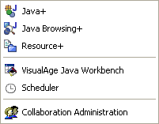

Enhanced Browsers
| 
|
CodePro includes enhanced versions of various Eclipse and Application Developer perspectives and views. The enhanced views include support for COLOR highlighting of various list elements. By default, modified elements are shown in blue and elements with errors are shown with a light red background. Optionally, elements with warnings can be highlighted with a light yellow background and elements modified since a specific checkpoint time can be highlighted with a light green background color. Enhanced perspectives include: Enhanced views include:
Options are provided via a preference page to set various foreground and background colors. |